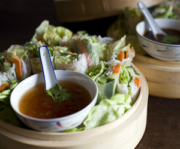

Fresh Springrolls
5 von 6Gemüse (Karotten, Gurken, Salat, Pfefferminze) waschen und in mundgerechte Stücke schneiden. Erdnüsse im Mörser zerstossen. Reisnudeln 5 Min. kochen und mit kaltem Wasser abschrecken. Reisblätter (Springrollwraper) in etwas Wasser dunken und auf ein feuchtes Tuch legen, etwas warten. Gemüse auf die Blätter geben und einrollen. Mit Hoisin- und oder mit Sweet Chili-Sauce servieren.
